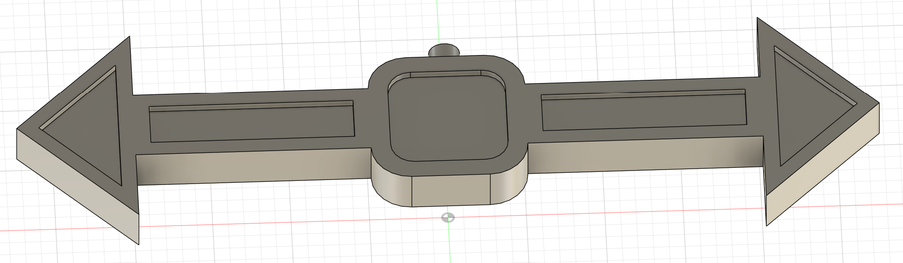
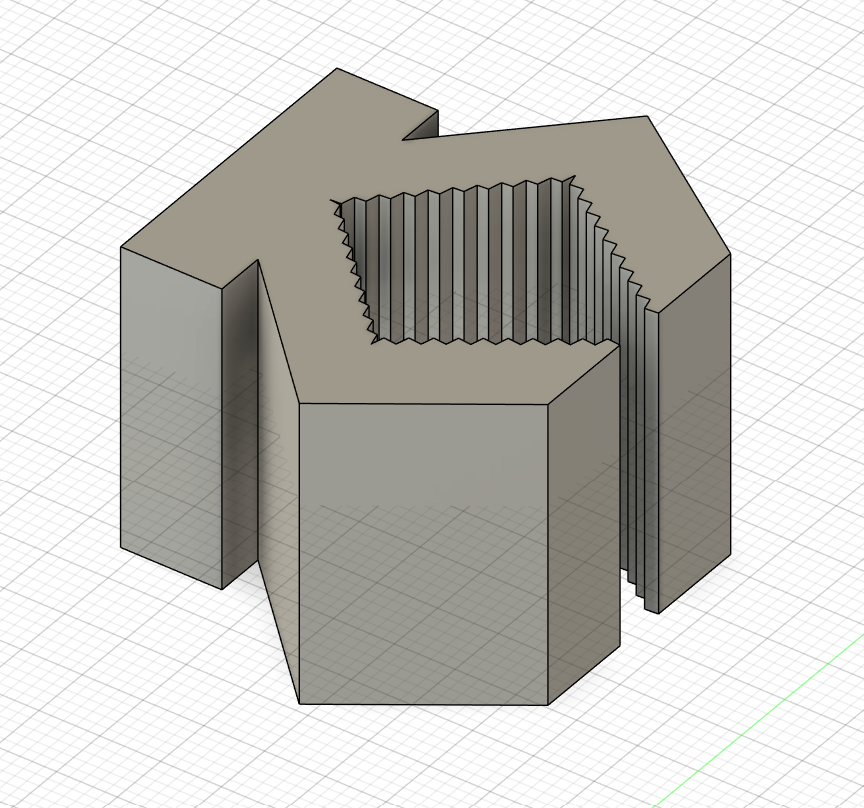
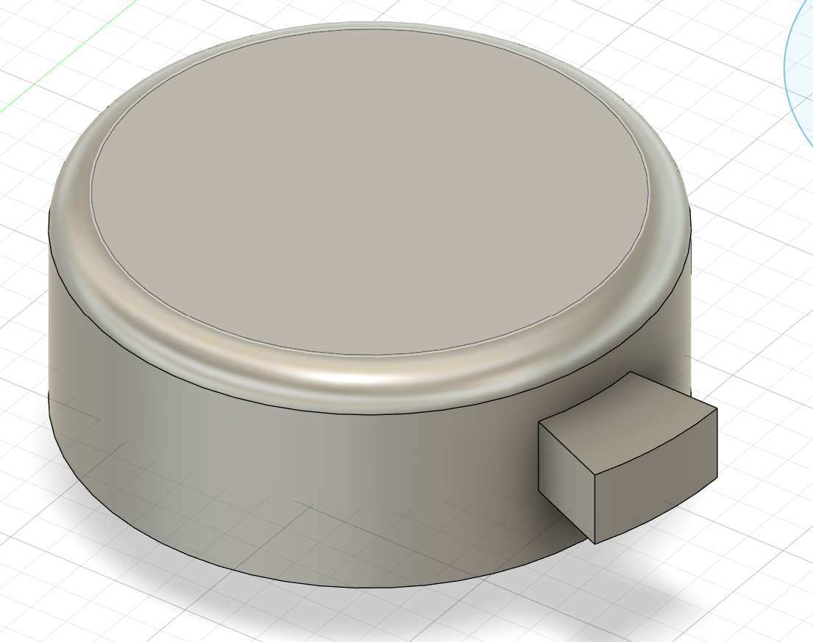

<div class="textcontainer">
<p class="margin"> </p>
<h3>Week 5: 3D Design & Printing</h3>
<h4>For this week we 3D printed an object and used photogrammetry to create a 3D model of a real object.
</h4>
<h4>For the 3D printing part, I focused on designing an objevt that would be difficult to fabricate using substractive techniques.
Consequently, I designed the following object. It's sharp edges and small features make it difficult if not impossible
for traditional milling machines to fabricate. The print came out with a good quality, although it struggled to keep the
more detailed elements. Additionally, in between two walls of the part, there was a series of thereads. These were easily removable
but it would be important for part which require precise measurements.
Here is the design in Fusion 360, and the result of the print:
</h4>
<h4>Furthermore, I also engaged in photogrammetry to create a 3D model. Initially, I tried to 3D scan one of the acorns that
trees are dropping around Harvard Square. However, this object proved to be too small; additionally, since it wasn't able
to stand on its own, the scan would have had to be done while holding the object, further complicating the process. Therefore, I
decided to scan my hand. Firstly I tried to do it with my hand spread out but the results weren't satisfactory since turning
my hand while keeping it steady proved to be difficult since by twisting my hand my fingers would move. Consequently,
I opted for a closed fist, which was easier to keep steady while rotating my hand. Here are the results of my 3D scan:
</h4>
<h3>Final project progress</h3>
<br/>
<h4>To avoid previous errors, to create the 3D model of my final project, every single measurement
was parametrized. Here are the finalized 3D models of the components my project requires:</h4>



<br/>
<h4>Furthermore, here is a tenative list of materials:</h4>
<br/>
<h4>* 5 LED panels</h4>
<br/>
<h4>* 2 Sheets of Wood </h4>
<br/>
<h4>* 1 microcontroller</h4>
<br/>
<h4>* 1 lever</h4>
<br/>
<h4>* 1 3D printed 'button'</h4>
<br/>
<h4>* 2 cables of at least 1m in length</h4>
<br/>
<h5> I chose wood instead of cardboard because the device should be relatively water proof and also rigid</h5>
<h4>Now, as for the timeline, I plan to build a prototype the week of Oct 13th. The next week I'll receive the feedback from
design experts to perfect the design. The week of Oct 27th I'll incorporate the feedback and new ideas to finalize a design.
The following week I'll craft another prototype. From there on, I'll focus on iterating my design to improve it by following
a schedule of one week of desing and one week of building and testing prototypes. This will continue until the last week of classes
when I'll focus on finalizing the design and preparing the presentation.
</h4>
<br/>
</div>